La Crimée et la Mer Noire dans le cadre de la rivalité des puissances : enjeux géopolitiques européens et mondiaux du XIXème siècle à aujourd’hui
par Pierre-Emmanuel THOMANN
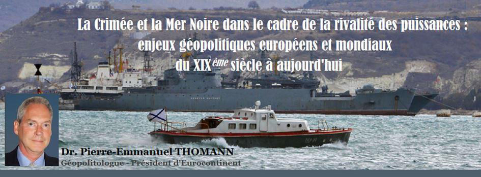
Cet article a été écrit à la suite d'une conférence internationale qui s'est tenue le 21 mai dernier à Sébastopol en Crimée, avec pour thématique « La question de la mer Noire au centre de la politique mondiale - 150ème anniversaire du traité de Londres 1871. »
Cette conférence organisée par la « Fondation Sébastopol pour l'histoire, la culture et le développement » réunissant de nombreux chercheurs du monde académique a examiné la situation géopolitique actuelle en mer Noire, établi des comparaisons historiques avec la situation au XIXème siècle et débattu des solutions pour surmonter les tensions qui menacent la sécurité européenne1.
La Crimée est héritière d'une histoire mouvementée et sa position géographique en mer Noire à l'intersection de la Russie, l'Ukraine, les Balkans, le Caucase, la Turquie et le Proche et Moyen-Orient la place au cœur des configurations géopolitiques européenne et mondiale, hier comme aujourd'hui. Ce territoire est un avant poste avancé au milieu de la mer Noire qui donne un avantage géostratégique décisif pour la défense de la Russie et le port de Sébastopol lui donne une ouverture vers la Méditerranée et les océans Atlantique et Indien (par le canal de Suez).
La Crimée au XIXème siècle était déjà au cœur des ambitions rivales des Empires russe, ottoman, français et britannique. A la suite de la crise en Ukraine en 2014, la Crimée a été rattachée à la Russie et ce contrecoup du changement de régime à Kiev, illégitime pour la grande majorité des habitants de la Crimée, constitue une réalité définitive et incontournable, non seulement du point de vue historique mais du réalisme géopolitique aussi.
Les acteurs et le contexte évoluent, mais les enjeux géopolitiques dominants traversent les siècles.
Comme au XIXème siècle dans une configuration géopolitique différente, la sortie de crise entre l'UE et la Russie en ce début du XXIème siècle, est susceptible de changer la configuration géopolitique européenne et mondiale et donc l'ordre international. C'est précisément pour cette raison qu'il est si difficile pour les États de surmonter la crise actuelle.
La Crimée et la mer Noire dans les configurations géopolitiques européenne et mondiale successives du XIXème siècle jusqu'à aujourd'hui
Pour comprendre la situation actuelle, il est nécessaire de se remémorer à grands traits les différentes configurations géopolitiques qui se sont succédées en Europe dans l'histoire et de mettre en lumière la centralité de la Crimée et la mer Noire pour les relations entre la Russie et les autres puissances.
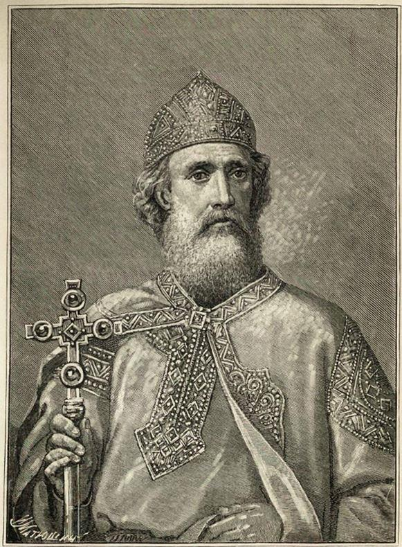Le destin de la Crimée, du point de vue de l'histoire, est intimement lié à la Russie. En effet le Prince Vladimir de la Russie kiévienne fût baptisé à Chersonèse en Crimée en 987 lors de son mariage avec Anne Porphyrogénète, princesse byzantine, après avoir défendu ce comptoir de l'Empire byzantin contre des rebelles du même Empire. La Crimée a ensuite été conquise par les Tatars. Elle fut enfin incorporée à l'Empire russe sous le règne de Catherine II au XVIIIème siècle. Ces faits historiques ont été rappelés lors de l'anniversaire du rattachement de la Crimée à la Russie2.
De 1850 à l'issue de la guerre de Crimée (1854-56) c'est la rivalité franco-russe pour l'hégémonie en Europe continentale, avec l'Angleterre comme balancer géopolitique, qui était le trait dominant de la configuration géopolitique de cette époque.
La Crimée fût le théâtre d'une guerre qui opposa la Russie à une coalition formée de la France, l'Angleterre, l'Empire ottoman et le Royaume de Sardaigne de 1853 à 1856.
En 1853, nous sommes plus de 40 ans après le congrès de Vienne qui a établi un nouvel ordre européen issu de la chute de Napoléon. L'invasion de la Russie par Napoléon, et la retraite qui a suivi en 1814, lui fut fatale, même s'il a fallu pour les Alliés encore gagner la bataille de Waterloo en 1815 pour venir à bout de l'Empire napoléonien. Le coup d'État de Louis-Napoléon Bonaparte (Napoléon III), le 2 décembre 1851, et le rétablissement de l'Empire français a éveillé à nouveau les craintes du tsar russe Nicolas I. La Russie se considérait en effet comme la garante de l'ordre européen depuis la constitution de la Sainte Alliance contre Napoléon et l'Empire français. La Russie cherchait aussi à endiguer les idées de la révolution française qui risquaient de contaminer les monarchies russe, autrichienne et prussienne.
Du point de vue de la France et de l'Angleterre, ce sont les visées expansionnistes de la Russie vis à vis des détroits turcs (les Dardanelles et le Bosphore) et de Constantinople mais aussi dans les Balkans, qui menaçaient de détruire l'équilibre européen. Les Français et les Anglais soupçonnaient la Russie de poursuivre de manière implicite le « projet grec » (ou Byzantin) de Catherine II. Ce projet géopolitique consistait à rétablir un Empire Byzantin avec pour capitale Constantinople après une guerre contre les Turcs, et d'y placer son fils Constantin comme nouveau souverain3. Un projet alternatif était de créer un État intermédiaire, la Dacie, en rassemblant la Moldavie, la Valachie et la Bessarabie, dans l'hypothèse d'une forte résistance des Turcs.
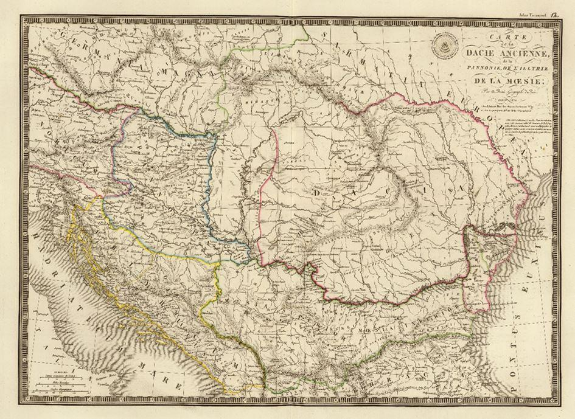La querelle des Lieux Saints, qui avait pour origine le Grand schisme de 1054, huit siècles auparavant, attisait la rivalité entre les Catholiques et les Orthodoxes en Palestine. Ce différent constituait l'enjeu religieux de la rivalité entre la Russie orthodoxe, qui se positionnait comme la protectrice de tous les Orthodoxes, Empire ottoman inclus, et la France censée protéger les chrétiens de rite latin. Ce différent va servir de carburant idéologique à la rivalité géopolitique entre puissances qui aboutira à la guerre de Crimée de 1853à 1856.
Les Russes ont d'abord posé un ultimatum à l'Empire ottoman afin que celui-ci accepte de donner un droit de regard à la Russie sur tous les sujets orthodoxes de son Empire. L'Empire ottoman en difficulté a ensuite déclaré la guerre à la Russie à la suite de l'occupation en 1853 par la Russie de la Valachie et la Moldavie, provinces ottomanes dans les Balkans. Il faut rappeler qu'à cette époque, les Orthodoxes étaient majoritaires dans l'Empire ottoman. Afin de barrer la route de Constantinople à la Russie, la France et l'Angleterre se sont alors alliées avec l'Empire ottoman et sont entrées en guerre pour attaquer la Crimée en 1854, en particulier le port de Sébastopol.
L'Angleterre craignait surtout de voir la Russie couper la Route des Indes et menacer sa suprématie comme puissance navale. La France craignait une incursion de la Russie en Méditerranée où son entreprise de colonisation du nord de l'Afrique avait débuté dès 1830. La France avait aussi une revanche à prendre après la défaire de Napoléon en Russie.
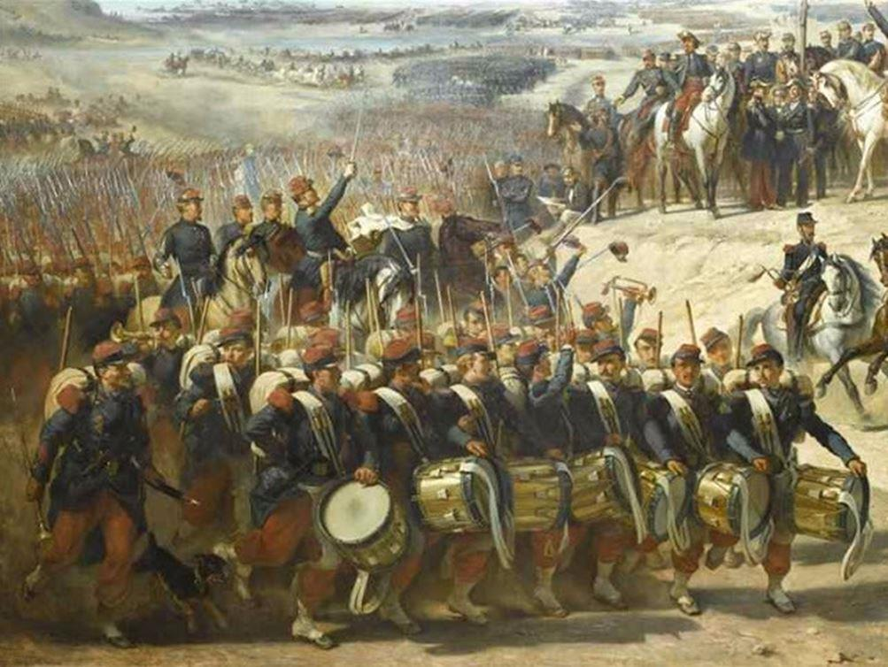
Guerre de Crimée
À l'issue de la Guerre de Crimée en 1856, l'objectif de contrer l'expansion de la Russie vers Constantinople et la Méditerranée fût atteint pour les Britanniques et les Français4. La France s'est hissée à nouveau comme l'arbitre de l'Europe continentale après 40 ans de relative isolation décidée par le Congrès de Vienne en 1814-1815, inaugurant le « concert européen des nations ».
Le traité de Paris en 1856 a mis fin à la guerre de Crimée. Il a proclamé l'intégrité de l'Empire ottoman, déclaré la neutralité de la mer Noire, interdit la navigation aux navires de guerre russes (et ottomans) ainsi que la construction de fortifications en Crimée. Il marque un coup d'arrêt à l'expansion russe dans la région5. Les contrecoups géopolitiques de cette guerre bouleverseront plus tard à nouveau les équilibres.
Le principe des nationalités mis en avant par Napoléon III lors du traité de Paris finira plus tard dans le siècle par se retourner contre la France. L'Unité italienne affaiblira l'Empire austro-hongrois et la Prusse réalisera l'unité allemande sous Bismarck, adepte d'une bonne entente avec la Russie, au détriment de la France.
L'ascendant de la France en Europe continentale s'est évanoui à l'issue de la guerre franco-prussienne de 1870. En 1871, la Russie a tiré profit de la défaite française lors la guerre franco-prussienne pour réviser les clauses sur la démilitarisation de la mer Noire. Le traité de Paris qui avait inauguré la neutralisation de la Mer Noire sera dénoncé par la Russie. A cette occasion, la négociation du traité de Londres en 1871 a aboli le principe de neutralisation de la mer Noire, et donc permit à la Russie de remilitariser Sébastopol et de réinvestir la mer Noire.
Une nouvelle configuration géopolitique émerge alors en Europe.
Les rivalités franco-allemande et germano-russe deviennent alors les traits dominants de l'Europe continentale à la suite de l'unification allemande en 1871, nouveau facteur de déséquilibre européen. Face à la prépondérance de l’Allemagne nouvellement unifiée, la France a cherché à constituer par la suite une alliance de revers franco-russe à la veille de la Première Guerre mondiale.
La question allemande est alors devenue en Europe l'enjeu central des deux guerres mondiales. Une fois la question allemande résolue à la suite de la défaite de l'Allemagne contre l'URSS et les États-Unis en 1945 lors de deuxième guerre mondiale, une nouvelle configuration voit le jour.
La configuration géopolitique de la guerre froide était caractérisée par un système international bipolaire dominé par les États-Unis et l'URSS, puissances rivales mais garantes de la division territoriale de l'Allemagne.
Durant cette période, la Crimée fût ensuite incorporée à l'Ukraine en 1954, par Nikita Khrouchtchev, Premier secrétaire du Comité central du Parti communiste de l'Union soviétique. L'Ukraine était sa patrie d'adoption et il a rattaché la Crimée à la République socialiste soviétique d'Ukraine (RSSU) à l'occasion du 300e anniversaire de la réunification de la Russie et de l'Ukraine. A cette époque, ce rattachement de la Crimée à l'Ukraine avait peu d'importance dans le cadre de l'URSS. Toutefois, cela allait avoir des conséquences grave après la dissolution de l'URSS qui a abouti à la dispersion des populations russes dans les nouveaux États indépendant, notamment l'Ukraine.
La dissolution de l'URSS en 1991 a de nouveau modifié la configuration géopolitique européenne et mondiale.
La Russie a dû faire face à une situation géopolitique dégradée après la fin de la guerre froide. La Russie, après la dissolution de l’URSS en 1991, a subit une perte conséquente de territoires stratégiques et la dispersion des populations russes avec l'indépendance des anciens États de l'URSS. Son territoire a subi des changements de frontières qui ont rétréci son territoire et l'ont ramené à une situation antérieure à la période de la Tsarine Catherine II au XVIIIème siècle.
Les élargissements successifs de l’OTAN vers l'Est n’ont pas tenu compte de la perception de sécurité de la Russie qui cherche à éviter qu’une alliance qui lui a été hostile pendant toute la guerre froide vienne s’installer dans sa proximité géographique, voire pire, sur des territoires ayant appartenu à la Russie dans son histoire longue (comme la Crimée aujourd’hui redevenue russe, le centre et l’Est de l’Ukraine). Vladimir Poutine, à l’occasion de son discours à la 43ème conférence de Munich le 2 octobre 2007, avait dénoncé l’extension de l’Alliance atlantique aux frontières de la Russie, contrairement aux promesses faites à Gorbatchev par le secrétaire général de l’OTAN, Manfred Woerner, qui avait promis le 17 mai 1990 qu’il n’y aurait pas de troupes de l’OTAN sur le territoire des anciens membres du pacte de Varsovie garantissant la sécurité à l’Union soviétique.6
À rebours de la réintégration de la Russie dans un nouveau concert des nations, c’est un refoulement dans ses terres continentales qui a été privilégié par le projet euro-atlantique. La poursuite de l’extension de l’Union européenne aux pays d'Europe centrale et orientale de manière insuffisamment concertée n’a pas favorisé non plus la confiance, d’autant plus que du point de vue des Russes, l'Union européenne et l'OTAN avancent de concert. Cette extension continue de l'OTAN et de l'Union européenne, s'est aussi déroulée selon la doctrine des changements de régime (ou révolution de couleurs) sur le flanc oriental de l'OTAN et de l'UE jusqu'aux frontières de la Russie et dans les Balkans.
C'est dans ce contexte que l'Union européenne, poussée par ses États-membres, notamment la Pologne et la Suède, mais aussi l'Allemagne, ont élaboré le Partenariat oriental en 2008, pour réorienter les États issus de l'Ex-URSS vers l'espace euro-atlantique. Un partenariat à donc été proposé à l'Ukraine par l'Union européenne. Forcer l'Ukraine à choisir entre une orientation géopolitique vers l'Union européenne ou l'Union économique eurasiatique soutenue par la Russie fût un facteur de déstabilisation qui a abouti à une guerre civile dans le Donbass. Lorsque le président Ukrainien Viktor Ianoukovytch a choisi de ne pas signer l'accord d'association proposé par l'UE, car excluant l'adhésion à l'Union économique eurasiatique, une partie de la population ukrainienne originaire surtout de l'Ouest de l'Ukraine, s'est soulevée contre le gouvernement. Ce mouvement baptisé « Euromaïdan », a reçu non seulement le soutien de mouvements néo-facistes, facteur aggravant de la situation mais aussi par les États-Unis et certains membres de l'OTAN et de l'UE.
Ces manifestations ont abouti à un changement de régime en 2014, et provoqué les désaccords profonds, tant au sein de la population de l'Ukraine, qu'au niveau international.
Suit aux menaces de contagion de la crise à la Crimée, peuplée en majorité de Russes qui n'ont pas approuvé le changement de régime à Kiev, les troupes russes de la base de Sébastopol ont maintenu la stabilité du territoire dans l'attente d'un référendum d'autodétermination qui a consacré la réunification de la Crimée à la Russie. La guerre civile s'est toutefois poursuivie dans le Donbass, conséquence de ce changement de régime non légitime pour une partie de la population. Le nouveau président ukrainien sorti des urnes, Petro Porochenko, a lancé une offensive militaire dans le Donbass qui s'est soldée par une défaite militaire, à l'inverse du dialogue qu'il avait promis avec les rebelles avant son élection. Le conflit de basse intensité perdure jusqu'à aujourd'hui sur la ligne de front ente les républiques rebelles du Donbass et les forces ukrainiennes.
Les manifestations sur la place Maïdan à Kiev avaient été soutenues politiquement par les États occidentaux de manière variable. Après le retour de la Crimée à la Russie, approuvé par un référendum non reconnu par l'UE, des sanctions ont été appliquées contre la Russie par l'UE et les États-Unis 7 et sont depuis reconduites chaque année jusqu'à aujourd'hui.
La Crimée est donc à nouveau l'enjeu d'une controverse internationale qui oppose aujourd'hui États membres de l'Union européenne et de l'OTAN à la Russie. Cette crise est donc directement issue de la question ukrainienne avec pour point de désaccord le plus grave, la question du retour de la Crimée à la Russie.
Derrière les enjeux de la Crimée et du Donbass des visions géopolitiques antagonistes et rivales sont portées par les différents États impliqués dans la crise actuelle, hier comme aujourd'hui.
Pas d'ordre international sans ordre spatial et géopolitique
Pour comprendre les facteurs profonds de cette crise, un diagnostic de la configuration géopolitique mondiale est nécessaire.
La nouvelle configuration géopolitique mondiale qui émerge depuis une décennie et qui se répercute sur les théâtre européen et eurasien, c'est la nouvelle rivalité des grandes puissances puisque les États-Unis ont désigné la Russie et Chine comme des adversaires stratégique. L'Allemagne, depuis sa réunification en 1990 est devenue la puissance centrale dans l'UE mais alliée aux États-Unis, elle garde une position ambigüe en privilégiant l'OTAN, mais tout en préservant son alliance énergétique avec la Russie. La France héritière de la vision gaulliste est en faveur d'une nouvelle architecture européenne de sécurité incluant la Russie, mais sa priorité au couple franco-allemand et le refus de fissurer l'UE et l'OTAN a abouti jusqu'à présent à des postures déclaratoires sans effet sur la configuration géopolitique.
Au XIXème siècle, les rivalités entre grandes puissances étaient ponctuées de guerres frontales, mais jamais totales. Ces conflits aboutissaient à la négociation de traités par définition temporaires et précaires, mais qui stabilisaient la situation pour une période limitée.
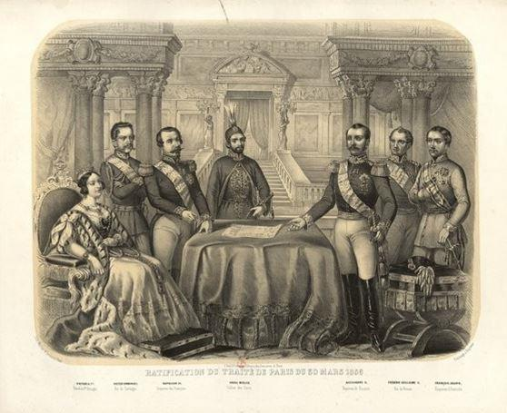Ce qui surprend aujourd'hui, c'est l'absence de négociations aboutissant à l'élaboration de nouveaux traités comme en 1856 (traité de Paris) ou 1871 (Traité de Londres). Ce blocage reflète une cristallisation des postures antagonistes et une intransigeance qui bloque les puissances rivales dans leurs postures irréconciliables, avec un effondrement du multilatéralisme et du droit international.
Depuis la fin de la guerre froide, aucun traité majeur n'a été signé entre les États-Unis, les États membres de l'Union européenne et la Russie. Par contre les États-Unis se sont retirés de nombreux traités internationaux, suivis par la Russie. Les grandes puissances n'entrent pas en conflit frontal mais se font la guerre de manière indirecte (par proxy) et la guerre hybride prend le pas sur les opérations militaires. Cette situation a abouti à des conflits permanent au sujet des problématiques géostratégiques, géoéconomiques, géoculturelles avec une palette d'outils de puissance comme la guerre de communication (propagande), les cyberconflits, les sanctions économiques, les ingérences dans la vie politique interne des États au moyen des ONG, les tentatives de révolutions de couleurs.
Pourquoi au XIXème siècle, les puissances européennes acceptaient-elles de signer des traités reflétant la nouvelle configuration géopolitique, après des crises et des guerres qui faisaient beaucoup de plus de victimes qu'aujourd'hui ? Pourquoi ce qui était possible au XIXème siècle n'est-il pas possible aujourd'hui ?
Le contraste est fort aujourd'hui car il n'est pas envisagé de traité entre les États-Unis, l'UE et Russie pour surmonter l'impasse actuelle et stabiliser la situation. Cela signifie que les États n'ont pas encore atteints leurs objectifs et ont l'intention de poursuivre la confrontation.
Posons l'hypothèse suivante : aujourd'hui les conflits en Europe sont de trop basse intensité pour modifier fondamentalement les objectifs des différentes puissances. Chaque conflit en Europe avec la Russie se transforme en conflit gelé car aucun des acteurs n'accepte la nouvelle situation qui reste insatisfaisante pour chaque partie, mais la guerre totale et frontale est pour l'instant aussi exclue. Les États-Unis et leurs alliés proches poursuivent l'idée d'un élargissement continu des frontières de l'euro-atlantisme avec l'OTAN, tandis que la Russie n'a toujours pas obtenu la légitimation de la nouvelle réalité géopolitique, comme le rattachement de la Crimée à la Russie, ou l'indépendance de l'Abkhazie et l'Ossétie du Sud. Après le moment unipolaire des années 90-2000, les gouvernements des États adeptes de l'euro-atlantisme exclusif gardent toujours l'espoir d'imposer un monde unipolaire et donc éviter la multipolarité qui implique un partage du pouvoir mondial, notamment avec la Russie et la Chine. Un monde multicentré implique évidemment la négociation de zones d'influences et de lignes rouges réciproques au moyen de traités temporaires et précaires qui gèrent la diversité pour plus de stabilité, comme au XIXème siècle.
Cette situation est donc la résultante d'une réalité plus fondamentale : Il n'y a pas d'ordre international sans ordre spatial et géopolitique. Aujourd'hui, nous sommes dans une période transitoire où aucun ordre géopolitique acceptable ne se dégage entre les États qui rivalisent entre ceux qui font la promotion d'un monde unipolaire et ceux qui souhaitent un monde multipolaire plus équilibré.
Sans acceptation de la part des États-Unis et leurs alliés du monde multipolaire et de ses conséquences, il ne peut pas y avoir d'entente sur des négociations multilatérales aboutissant à des traités pour stabiliser la situation.
Comme il n'y pas d'ordre spatial acceptable pour les grandes puissances, il y a incertitude totale sur les perspectives bien que les risques de guerre sont supposée être limités par la possession de l'arme nucléaire par les grandes puissances comme la Russie, les États-Unis, la Chine, la France et le Royaume-Uni et la guerre hybride est le nouveau terrain de confrontation. Le facteur nucléaire empêchait jusqu'à présent les grandes puissances d'aller trop loin dans la confrontation, mais l'escalade peut s'avérer évidemment plus risquée avec les armes nucléaires intermédiaires.
En ce qui concerne les éléments permanents sur la longue histoire, il y a aujourd'hui comme au XIXème siècle, la volonté d'endiguer la Russie dans ses terres continentales par les États portés au tropisme atlantiste marqué pour ralentir l'évolution vers un monde plus multipolaire. Les États-Unis et leurs alliés de l'OTAN jouent le rôle principal de l'endiguement /encerclement de la Russie et non plus seulement la Grande Bretagne et la France comme au XIXème siècle. Du point de vue de l'OTAN, la Turquie est aussi considérée aujourd'hui comme un rempart contre la Russie, comme l'Empire ottoman contre la Russie au XIXème siècle. Cependant la Turquie a une posture ambigüe en valorisant sa qualité de membre de l'OTAN, tout en menant des concertations tactiques avec la Russie sur différents théâtres ou elles entrent en rivalité.
Diagnostic sur la configuration mondiale et positionnement des acteurs : les États-Unis, la Russie, l'Union européenne
LE RETOUR DES MANŒUVRES GÉOPOLITIQUES EN EUROPE ET DANS LE MONDE
Le contexte géopolitique actuel est caractérisé par l'émergence d'un monde multicentré et l'Europe n'y fait pas exception. Dans cette configuration, chaque nation, État ou alliance, cherche à se positionner au milieu d'un ensemble structuré géopolitiquement pour assurer leur sécurité et leur épanouissement économique, et pour les plus puissants, leur expansion géopolitique. Les communautés humaines sont territoriales et toute nation ou alliance est liée à un territoire. Comme l'a souligné Raymond Aron, « tout ordre international, jusqu'à nos jours, a été essentiellement un ordre territorial ».8
Pour comprendre la configuration géopolitique actuelle, il est nécessaire d'examiner la posture géopolitique des États-Unis car ils demeurent la puissance mondiale principale. Celle-ci détermine pour une grande part le positionnement des autres puissances, notamment la Russie et l'Union européenne.
La stratégie géopolitique des États-Unis : encerclement de l'Eurasie
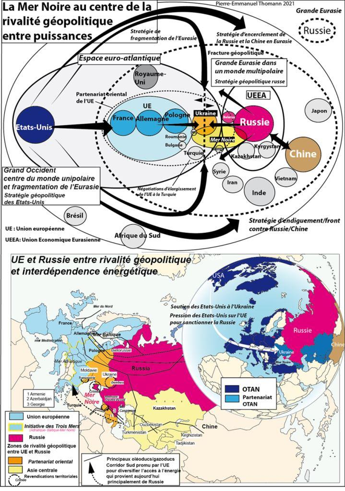L'élection de Joe Biden aux États-Unis ne change pas la stratégie géopolitique des États-Unis sur les temps longs, toutefois les éléments tactiques, et la manière de se positionner en termes de communication évolue.
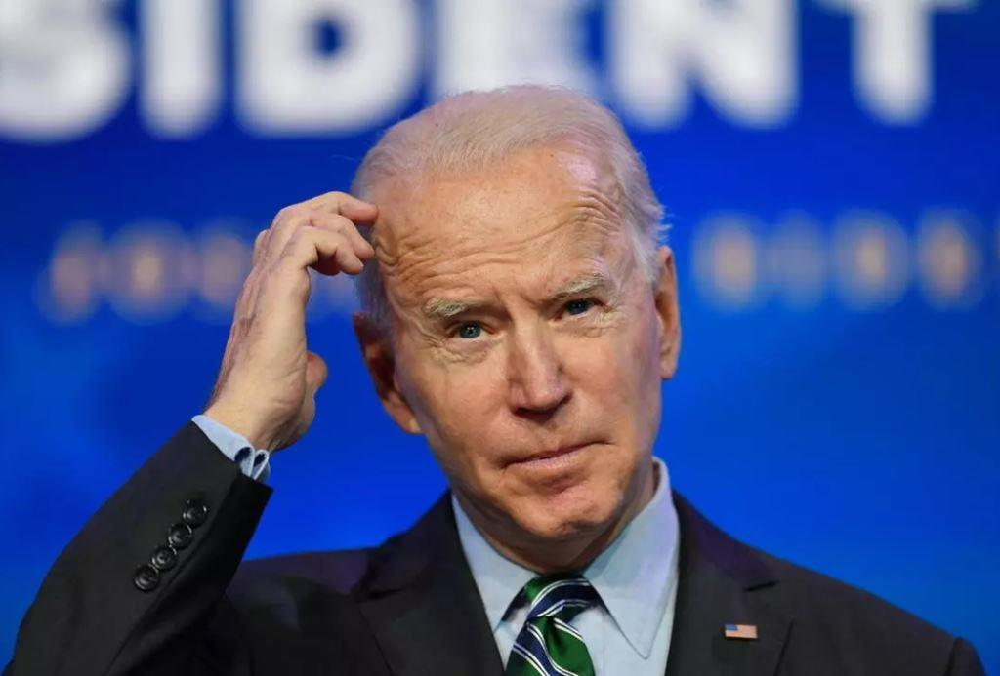« America First » reste la boussole stratégique, même si Joe Biden souhaite renouer avec les alliés européens au nom d'une alliance des démocraties, mais pour les arrimer plus fermement aux priorités géopolitiques des États-Unis.
Les États-Unis, pour ralentir la nouvelle multipolarité qui menace l'héritage unipolaire de l'après-guerre froide et défendre leur statut de première puissance en érosion, sont engagés dans une manœuvre mondiale d’enveloppement de l’Eurasie avec un front Est-européen et balkanique visant la Russie et la stratégie indopacifique contre la Chine.
Les États-Unis font de l'Europe un Rimland, c'est à dire un espace côtier sous leur contrôle, qui bloque une orientation de l’Union européenne vers l'espace eurasien, et donc vers la Russie, mais aussi la Chine par voie continentale.
Selon cette stratégie d'enveloppement de l'Eurasie, les États membres de l'OTAN situés autour de la mer Noire et l'Ukraine sont des États-fronts destinés à empêcher que la mer Noire ne devienne un lac russe. Ils ont vocation à restreindre l'accès de la Russie vers les Océans mondiaux et repousser la Russie dans ses terres continentales au moyen des élargissements successifs de l'OTAN. Cette stratégie provoque naturellement une réaction de la Russie par contrecoup géopolitique.
En ce qui concerne le conflit en Ukraine et dans le Donbass, L'élection de Joe Biden a eu pour effet immédiat de remettre la question ukrainienne au centre des relations américano-russes. La Turquie soutient aussi de manière croissante l'Ukraine, comme État-pivot contre la Russie. Les Britanniques, après le Brexit, ont pour objectif de renforcer l'OTAN et soutiennent aussi l'Ukraine de manière de plus en plus visible.
Toutefois, après les provocations du gouvernement Ukraine dans le Donbass en avril 2021 pour renforcer l'attention des États-Unis après l'élection d'un nouveau président, le positionnement des troupes russes à la frontière ukrainienne, selon la doctrine de « l'escalade pour engager la désescalade » de la part de la Russie a semblé porté ses fruits, puisque la situation s'est ensuite (temporairement ?) Joe Biden a proposé à Vladimir Poutine de tenir un sommet entre les États-Unis et la Russie pour juin 2021.
La prolongation du traité Start par les États-Unis et la Russie a aussi montré qu'il y avait volonté de ne pas entrer en conflit frontal. Toutefois la guerre hybride et les conflits indirects pourraient s'aggraver.
La posture de la Russie : la grande Eurasie
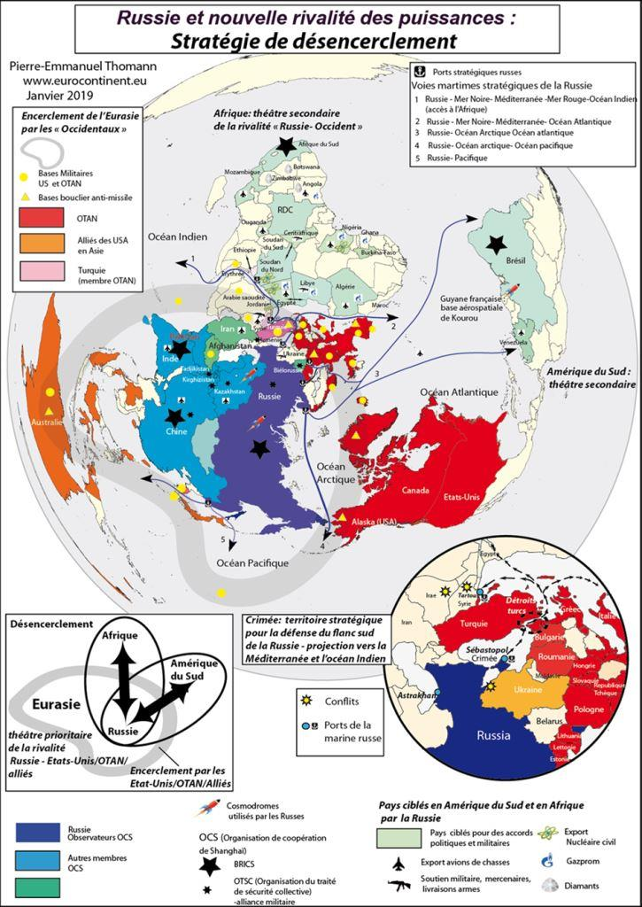Au niveau mondial, c’est aussi la Russie qui porte de manière la plus active le projet d’un monde multipolaire dans le contexte de la mondialisation qui se résume de plus en plus à une lutte de répartition des espaces géopolitiques.
La Russie a initié dès 2016 son projet de « Grande Eurasie »9. Le cœur de cette doctrine consiste à approfondir l’Union économique eurasiatique dans le cadre d’un pivot vers l’Asie pour résister à la pression des États-Unis, de l’OTAN et de l’Union européenne. La Russie fait aussi un retour en Afrique et en Amérique du Sud. La Chine et la Russie contestent toutes deux l’ordre géopolitique occidental issu de la fin de la guerre froide.
Pour la Russie, il s'agit avant tout d'éviter que le projet unipolaire euro-atlantiste sous leadership des États-Unis ne s'impose. La Russie cherche au contraire à promouvoir un monde multicentré afin que la Russie préserve son rôle de chef de file dans son étranger proche. Il ne s'agit pas de recréer une puissance équivalente à l'URSS ni de rétablir un monde bipolaire. La Russie n'en a ni les moyens, ni l'ambition, mais un meilleur équilibre géopolitique.
La perception d’encerclement de la Russie après son rétrécissement territorial issue de la dislocation de l'URSS et l’installation de bases de l’OTAN toujours plus près de son territoire est aussi une réalité incontournable pour comprendre la situation actuelle.
L’objectif prioritaire de la Russie de desserrer son encerclement par l’Alliance atlantique est (provisoirement ?) atteint car sur le théâtre européen, la Russie a réussi a enrayer l'extension de l'OTAN à l'Ukraine et la Géorgie. Dans le cas de la Géorgie et de l’Ukraine, l’éventualité d’une adhésion de la Géorgie mais aussi de l’Ukraine à l’Alliance atlantique sont durablement remises en cause10.
En ce qui concerne l’Ukraine, son adhésion à l’Alliance atlantique devient non seulement plus risquée en raison du conflit dans le Donbass, mais aussi moins avantageuse par l’impossibilité pour l’OTAN de s’implanter en Crimée rattachée à la Russie. La réintégration de la Crimée11 à la Russie après le référendum du 16 mars 2014 rend impossible un élargissement de l’OTAN à l’Ukraine. Si le gouvernement ukrainien ne reconnait pas la sécession de la Crimée, en cas d’adhésion à l’OTAN, l’article V de défense mutuelle pourrait être invoqué et l’OTAN se trouverait de facto en conflit avec la Russie, ce que refusent la plupart de ses États-membres européens. Si le nouveau gouvernement reconnaissait la sécession, un élargissement de l’OTAN à l’Ukraine sans la Crimée aurait moindre valeur stratégique. Ce scénario rencontrerait également l’opposition de la Russie.
L'enjeu géopolitique de la Crimée et du port de Sébastopol est l'épicentre de la crise ukrainienne. La valeur stratégique de la Crimée relève aussi bien de la défense maritime du territoire russe que de la projection dans les océans mondiaux. La Crimée comme pivot géopolitique complète au sud la valeur stratégique de Kaliningrad et les bases de Kronstadt et Baltiisk dans la mer Baltique, la presqu'île de Mourmansk au Nord et le port de Vladivostok vers l'océan Pacifique.
Le retour de la Crimée à la Russie permet à celle-ci de contrer son encerclement par le dispositif du bouclier anti-missile de l'OTAN (qui est couplé à celui des États-Unis) et les bases de l'OTAN sur le pourtour de la Mer Noire en Turquie, Bulgarie et Roumanie.
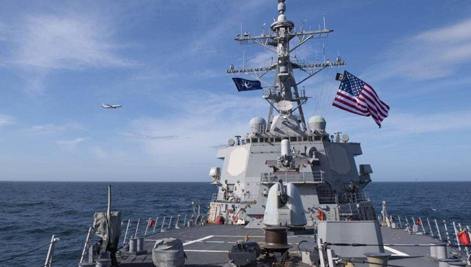La Mer Noire est la voie d'accès stratégique pour la Russie à la Méditerranée, et donc les mers chaudes. La Crimée et le port militaire de Sébastopol représentent l’ouverture de la flotte russe vers les détroits (Bosphore et Dardanelles, la Méditerranée avec le port de Tartous en Syrie, et ensuite l’Atlantique mais aussi la mer rouge par le canal de Suez. Cet enjeu géopolitique était déjà primordial au XIXème lors de la guerre de Crimée (1853-1856) lorsque les Britanniques et les Français, alliés à l’Empire ottoman, ont cherché à bloquer la poussée russe vers les mers chaudes. La réintégration de la Crimée dans le territoire de la Russie, en raison de sa position stratégique, empêche à plus long terme l’ouverture de bases et l’installation d’éléments du bouclier anti-missile de l’OTAN et des États-Unis aux frontières de la Russie et met un terme à son encerclement progressif12.
Le nouveau gouvernement issu du coup d’État à Kiev avait annoncé souhaiter entamer une procédure d'adhésion à l’Union européenne et se rapprocher de l’OTAN. Du point de vue des Russes, le processus d’adhésion dans l’UE signifie de facto une adhésion ultérieure à l’OTAN. Les États-Unis et certains de leurs alliés européens avaient déjà soutenu l’élargissement de l’Ukraine et la Géorgie à l’OTAN en avril 2008. Julia Timochenko avait en outre déclaré que le bail de la flotte russe à Sébastopol expirerait en 2017, tandis que le président Ianoukovitch l’avait prolongé jusqu’en 2042, d’où la méfiance des Russes avec le nouveau régime qui persiste évidemment dans sa volonté de rapprochement de l’Ukraine avec l’OTAN.
L'Union européenne sans stratégie géopolitique autonome
Au fondement de la rivalité entre la Russie et les puissances occidentales (l’Occident selon le sens qui lui a été donné pendant la guerre froide comprend les États-Unis et ses alliés de l'OTAN) il y a le refus des gouvernements des États-membres européens de l'UE de l'OTAN et en particulier les États-Unis de mettre la Russie sur un même pied d'égalité. La Russie selon la vision euro-atlantiste et exclusive devrait s'occidentaliser et s'aligner sur la vision normative de l'UE et les priorités de l'OTAN et se contenter du statut de puissance régionale en Eurasie.
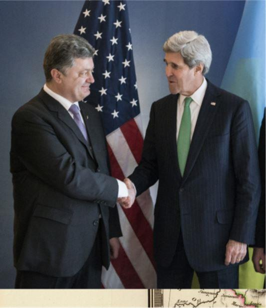Au début de la crise en Ukraine, les déclarations de John Kerry et Angela Merkel, les deux leaders politiques les plus favorables aux sanctions13 de l'Union européenne contre la Russie parmi les Occidentaux ont laissé penser que la Russie était un acteur dont le comportement appartenait au passé. Selon John Kerry dans une déclaration le 3 mars 2014, « on ne peut agir au XXIème siècle comme au XIXème siècle en envahissant un autre pays pour un prétexte erroné »14 Angela Merkel lui a emboîté le pas et a longuement insisté sur cet aspect le 13 mars 2014 lors d'une déclaration du gouvernement au parlement.
Elle a déclaré que « Le conflit en Géorgie en 2008 et aujourd'hui au milieu de l'Europe en Ukraine un conflit de zones d'influence et de revendications territoriales, comme nous les connaissions au XIXème et XXème siècle, et que nous pensions dépassés ».
En conséquence du déni de la réalité géopolitique qui allait à l'encontre de sa doctrine normative, l'Union européenne a fait dépendre ses relations avec la Russie de principes de droits déclarés de manière unilatérale : « Une évolution substantielle des relations entre l'UE et la Russie présuppose le plein respect du droit international et des principes qui sous-tendent l'ordre de sécurité européen, notamment l'Acte final d'Helsinki et la Charte de Paris. Nous ne reconnaîtrons pas l'annexion illégale de la Crimée par la Russie ni n'accepterons la déstabilisation de l'est de l'Ukraine. »15 Mais les critiques vis-à-vis de la Russie au sujet du non-respect du droit international ont eu peu de prise sur l’opinion publique russe après la remise en cause du système onusien par les États-Unis lors de la guerre en Irak, ou le non respect de l’intégrité territoriale de la Serbie avec la reconnaissance de l’indépendance du Kosovo par de nombreux États.
L’Union européenne et la Russie devraient également éviter d'ergoter sans fin sur le droit international, car il s’agit avant tout d’interprétations qui dépendent de l’évolution des rapports de force. Le « droit des peuples à l'autodétermination » était préconisé par l'Union européenne pour l'unification de l'Allemagne, les indépendances tchèque et slovaque, la dissolution de la Yougoslavie, mais aussi de la part de la Russie dans le cas de l'Ossétie du Sud et de l'Abkhazie. Aujourd'hui, dans le cas de la Crimée, l'UE défend le principe « d'intégrité territoriale », tandis que la Russie défend le « droit des peuples à l'autodétermination » , deux principes contradictoires de la charte des Nations Unies
L'Union européenne aujourd'hui, fait dépendre un approfondissement des relations entre l'UE et la Russie par la mise en œuvre des accords de Minsk, et donc fait dépendre de facto ses relations avec la Russie d'un État tiers, l'Ukraine qui devient l'instrument géopolitique des États les plus atlantistes pour bloquer les relations entre la Russie et l'UE.
Derrière cette posture juridique et normative, quel est le positionnement géopolitique de l’Union européenne ? les priorités géopolitiques, qui varient selon les États-membres de l'UE sont surtout implicites, car on l'a dit, c'est l'idéologie normative qui est mise en avant.
Toutefois, un rapport du parlement européen donne les clefs de ce positionnement.
Dans ce rapport de 2019, il est précisé aussi que « considérant que la vision russe polycentrique du concert des puissances contredit la croyance de l’Union en un multilatéralisme et en un ordre international fondé sur des règles; que l’adhésion et le soutien de la Russie à un ordre multilatéral fondé sur des règles créeraient les conditions d’un renforcement des relations avec l’Union ».16 Selon la stratégie globale de l'Union européenne (2016) « la gestion des relations avec la Russie constitue un défi stratégique majeur ».
Ces éléments soulignent que l'Union européenne est donc de facto en faveur d'un monde unipolaire qui consacre la primauté de la vision euro-atlantiste exclusive sous leadership des USA, puisque la vision polycentrique contredit sa vision du multilatéralisme. L'Union européenne qui se considère complémentaire à l'OTAN, participe à la tentative d'enfermement de la Russie sur le continent eurasien et à la diminution de sa marge de manœuvre en Mer Noire, avec la promotion du partenariat oriental (Ukraine, Moldavie, Géorgie, Arménie, Azerbaïdjan).
Cette vision va pourtant à l'encontre de la vision européenne d'inspiration gaulliste de la France qui est complémentaire de la promotion d'un monde multipolaire.
Sous couvert de posture normative, l'UE est donc jusqu'à présent alignée sur les priorités géopolitiques des États-Unis et gouvernements ultra-atlantistes, avec des degrés variables selon les États-Membres.
En réalité, l'UE n'est plus le cadre adéquat de la relation pour une réinitialisation des relations la Russie dans l'immédiat, mais pour uniquement maintenir des liens dans le cadre de la coopération sélective.
Au sein de l'Union européenne, la France et l'Allemagne ne veulent pas d'une guerre frontale contre la Russie. Cependant, les gouvernements des deux pays n'ont pas souhaité jusqu'à présent se positionner de manière indépendante par rapport aux États-Unis. La rivalité géopolitique franco-allemande issu du nouveau déséquilibre européen depuis l'unification allemande les empêchent d'adopter une politique commune audacieuse vis à vis de la Russie et les tropisme géopolitiques régionaux (vers l'est, option privilégiée par l'Allemagne ou vers le sud option privilégie par la France) et mondiaux (l'Allemagne ne conçoit l'Union européenne que comme un sous-ensemble de l'espace euro-atlantique tandis que la France souhaite une autonomie stratégique européenne, concept tout aussi inopérant pour une Europe plus géopolitique qui ne pourrait se baser que sur les nations) favorise les neutralisations réciproques.
La Crimée et la mer Noire au centre des rivalités géopolitiques européennes et mondiales : comment surmonter les tensions ?
La crise qui s'est installée de manière durable entre la Russie et les États membres de l'UE est un obstacle à la constitution d'une espace de sécurité et de prospérité pan-européen. Les puissances extérieures à l'Europe en tirent avantage dans l'émergence du monde multicentré très compétitif. Un rapide coup d'œil sur la carte de l'Europe nous rappelle qu'un débat sur les relations entre la Russie et l'Union européenne n'est pas seulement une nécessité géopolitique, mais également un processus naturel en raison de leur proximité géographique. Tout au long de l'histoire, les nations européennes, y compris la Russie, ont constamment fait l'expérience d'intérêts divergents ou contradictoires. Les États ont donc besoin d'un dialogue constant pour maintenir la stabilité et l'équilibre des pouvoirs sur le continent européen.
L'espace (géographie) et le temps (histoire) sont des facteurs déterminants de la géopolitique européenne. L’identification des intérêts communs sur la base des contraintes de ces facteurs est essentielle pour tracer un avenir géopolitique commun et devrait prévaloir sur l’idéologie politique.
Pour surmonter la fracture actuelle qui s'emble s'installer dans la durée, au moins pour le court et moyen terme, c'est éviter l'escalade qui semble le plus pressant.
Les options à court et moyen terme sont les suivantes :
1) Il y a d'abord la nécessité de maintenir les liens forts entre les sociétés civiles puisque les États ont du mal à s'entendre. Il faut avant tout poursuivre les échanges entre les universitaires, les chercheurs, les étudiants, les artistes, les acteurs économiques et les citoyens en favorisant le tourisme.
2) Une autre voie est de renforcer la coopération régionale et transfrontalière au sein d'organisations multilatérales, régionales et locales mais aussi entre les villes selon une logique « bottom up ». Il serait utile de prendre exemple sur des initiatives qui fonctionnent, par exemple en Arctique où la coopération régionale avec la Russie se poursuit malgré la crise, même si la Crimée présente une situation spécifique plus difficile à surmonter avec les sanctions ciblées. Les organisations à mobiliser sont le Conseil de l'Europe, l'Organisation de coopération économique de la mer Noire (OCEMN), afin de contourner les blocages puisque les sanctions européennes bloquent désormais les initiatives comme la coopération régionale et transfrontalière (European Neighbourhood Instrument, Interreg NEXT Black Sea Basin Programme).
Les thématiques peuvent être diverses comme la coopération universitaire, l'environnement, la recherche, l'énergie, la sécurité, le climat, l'intelligence artificielle, l'espace, la culture, le tourisme...
3) Convaincre les acteurs politiques de l'obsolescence des sanctions réciproques. Selon le scénario le plus probable d'évolution de la crise, puisque la levée des sanctions est très incertaine dans un avenir proche, c'est la créativité pour élaborer de nouveaux projets de coopération afin de compenser les sanctions existantes qui serait judicieux. Lorsque les gouvernements se rendront compte que ces sanctions sont non seulement inutiles politiquement puisqu'elles n'ont pas contribué à un changement de posture des gouvernements, mais qu'elles sont de moins en moins applicables sur le terrain et même contre-productives, la levée des sanctions pourra être envisagée.
La question de la reconnaissance de la Crimée comme partie intégrante de la Russie est une question encore plus difficile, mais relève de la volonté politique afin de ne pas en faire un obstacle à la coopération. Le cas de la Turquie et la non reconnaissance par l'UE de la République turque de Chypre du Nord, qui est de facto sous contrôle militaire de la Turquie, démontre que cela ne constitue pas un obstacle, ni pour une union douanière entre l'UE et la Turquie, ni pour des financements à la Turquie (à la suite de la crise migratoire de 2015), ni des négociations d'adhésion.
4) On l'a dit, l'Union européenne n'est aujourd'hui plus dans le contexte actuel le cadre adéquat de la relation pour une réinitialisation des relations avec la Russie dans l'immédiat, mais pour maintenir des liens dans le cadre de la « coopération sélective ».
L'Union européenne17 a proposé une coopération technique sur les thématiques suivantes ; l'Arctique, le numérique, l'union économique eurasienne, les infrastructures régionales, la « dimension nordique » entre l'UE, la Russie, la Norvège et l'Islande. Cette initiative pourrait-elle être élargie aux enjeux de la mer Noire ?
Cette approche peut être utile et l'idée sous-jacente est la compétition avec la Chine, mais elle ne peut pas changer la configuration géopolitique. Résoudre les questions fondamentales de sécurité exige par contre l'élaboration d'une nouvelle architecture européenne de sécurité. Une révision des cinq principes de l'UE vis à vis de la Russie est aussi nécessaire car en faisant dépendre la relation entre l'UE et la Russie de la situation en Ukraine, la coopération reste bloquée.
Ces approches ne changeront pas la configuration géopolitique, mais peuvent restaurer la confiance, et élaborer au niveau local et régional des programmes qui peuvent apporter des avantages.
Perspectives à long terme : la pertinence d’une nouvelle architecture de sécurité européenne et eurasienne
Dans le contexte de l'émergence de la configuration géopolitique polycentrique, de la rivalité des grandes puissances et de la consolidation des États-Civilisations, le projet européen ne pourra atteindre une masse critique géopolitique que de concert avec la Russie18. Le bilan géopolitique est un préalable à l'action. Une stratégie géopolitique peut ensuite être pensée en fonction d'objectifs politiques liés au projet européen.
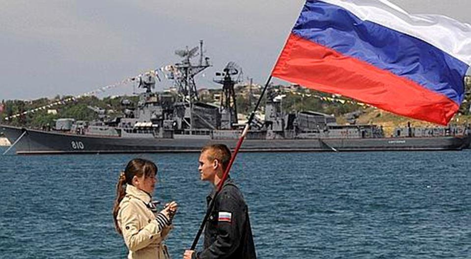Le constat est que les manœuvres territoriales ont abouti à la constitution de zones d’influences conçues outre-Atlantique et fractionnent le continent européen. Elles réduisent à néant le projet de stabilisation continentale, qui est une option envisageable et souhaitable depuis la fin de la guerre froide. L’option d’un refoulement de la Russie dans ses terres continentales a bien été choisie, plutôt que son intégration dans le nouveau concert des nations européennes et mondiales selon le principe classique de l’équilibre, doctrine européenne par excellence qui mérite d’être redécouverte. La vision euro-atlantique exclusive qui s’impose bloque la vision européenne continentale.
Les impasses actuelles de la volonté d'ouvrir la Russie à une occidentalisation idéologique et la pratique des sanctions pour contraindre ses décisions géostratégiques ont pourtant échoué. La crise actuelle entre l'UE et la Russie devrait être perçue comme une opportunité pour les États membres de l'Union européenne afin de réformer le projet européen.
Le projet européen a besoin d’une Russie forte et souveraine, comme aiguillon de l’avènement du monde multipolaire au sein duquel l’Europe dans son ensemble pèsera sur les grands équilibres. Un rapprochement avec la Russie permettrait aux Européens de diversifier leurs alliances, et de promouvoir un monde multicentré, et non plus un ensemble euro-atlantique exclusif ou l'UE devient un périphérique sans squelette. Une « Europe politique » devrait assurer en priorité sa sécurité militaire, économique et énergétique par une politique d’alliances sur son pourtour géographique. La géographie fait de la Russie un partenaire incontournable pour l’espace eurasien.
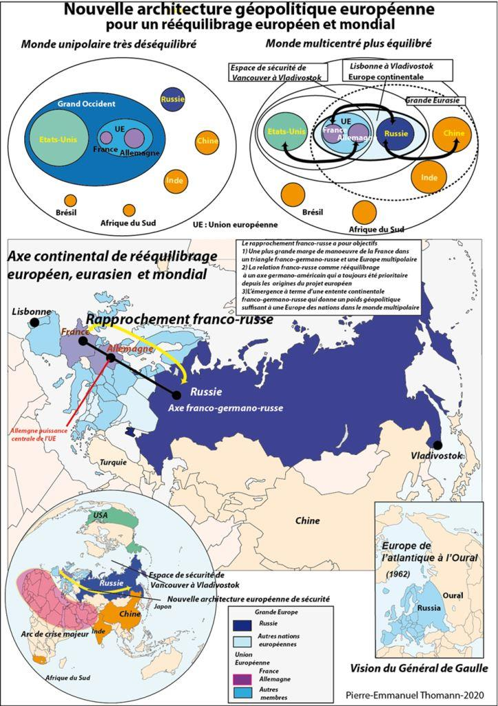La priorité est aujourd'hui d'éviter une rivalité territoriale dans l’espace géopolitique entre la Russie et l’Union européenne. Au lieu de se focaliser exclusivement sur l'idéologie multilatéraliste, la doctrine du principe de l'équilibre des pouvoirs est plus susceptible d'instaurer la confiance entre les États membres de l'UE et la Russie afin de réaliser des projets communs et d'identifier des normes et des valeurs communes.
Résoudre la tension avec la Russie n’est pas envisageable par des actions au cas par cas, mais par une démarche d’ensemble visant à offrir une place adéquate à la Russie dans le projet européen, à l’inverse du projet euro-atlantiste qui vise à élargir l’Union européenne et l’OTAN à tous les ex-États de l’URSS sauf la Russie et orienter l’Europe de manière exclusive vers les États-Unis.
Pour une résolution des différents « conflits gelés » sur le flanc oriental de l’Europe et dans le pourtour de la mer Noire, la Crimée, le Donbass, le Haut-Karabagh, l'Ossétie du Sud et l'Abkhazie, la Transnistrie dont l’avenir n’est toujours pas déterminé, la négociation d'une nouvelle architecture de sécurité européenne et eurasienne de sécurité reste donc pertinente à l’avenir. Il est illusoire de croire à la résolution des différents conflits au cas par cas, car ils font partie d’une problématique systémique plus large, la rivalité entre la Russie, les États-Unis ; les Européens membres de l'UE et de l'OTAN et la Turquie. Ils peuvent être réactivés à tout moment en fonction des évolutions des rapports de force.
Les États européens favorable à une nouvelle approche pourraient élaborer des stratégies et des politiques extérieures distinctes de celles de l’OTAN. L'émergence d'une coalition d’États volontaires en Europe à l'initiative de la France et de ses alliés en accord avec cette vision serait appropriée pour constituer un poids politique suffisant au sein de l’Union européenne, ou en dehors si les blocages persistent, afin d’entamer des discussions sur une nouvelle approche pour promouvoir la paix et la stabilité en Europe et l'élaboration d'une vision géopolitique commune de Brest à Vladivostok.
L’extension continue de l’OTAN et de l’Union européenne est de nature à aggraver la sécurité européenne par l’obsession de la plupart des nouveaux membres à instrumentaliser l’OTAN et l’UE par des politiques hostiles à la Russie, avec la connivence des gouvernements des anciens États membres les plus atlantistes et les États-Unis. Ce serait particulièrement le cas avec une extension de l’Union européenne et de l’OTAN à l’Ukraine, à la Géorgie et à la Moldavie. Ce scénario ne contribuerait ni à la sécurité européenne, ni à la poursuite de la finalité d’une Europe politique et souveraine.
Il serait donc judicieux d’annoncer l’arrêt définitif de l’extension de l’Union européenne et de l’OTAN vis-à-vis de l’Ukraine, de la Géorgie, de la Moldavie, de l’Azerbaïdjan et de l’Arménie pour lever toute ambiguïté aujourd’hui savamment entretenue.
De plus, l’incorporation du territoire de l’Ukraine dans le giron de l’Union européenne ne peut que renforcer la rivalité géopolitique franco-allemande par la perception d’un déplacement du centre de gravité du projet européen vers l’Est et renforcer les divisions Est-Ouest au sein de l’Union européenne. Il est utile de rappeler que le partenariat oriental a été initialement conçu comme un moyen d’empêcher une focalisation de l’Union européenne sur son flanc Sud. La Pologne et la Suède sont ainsi à l’origine de cette initiative pour contrer l’Union pour la Méditerranée qui avait été promue par le gouvernement français en 2008, mais aussi pour créer une zone tampon vis-à-vis de la Russie. Le partenariat oriental fait donc partie d’un plan de rééquilibrage vis-à-vis des intérêts de la France mais aussi de la Russie. C’est pour cette dernière raison que les États-Unis soutiennent cette politique afin de faciliter à l’avenir les élargissements éventuels de l’OTAN.
Le « deux poids deux mesures » vis-à-vis de la Russie devrait ainsi être évité à l’avenir pour rétablir la confiance avec la Russie.
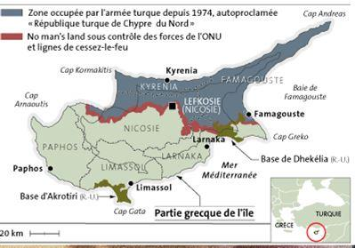On l'a dit, avec la présence de troupes turques sur le territoire au nord de la République de Chypre, une portion du territoire de l'Union européenne est non seulement occupée de facto mais aussi de jure par une puissance extérieure. La posture de l'Union européenne et de ses États membres est pour le moins paradoxale en matière de relations extérieures et révèle ici un cas flagrant de « deux poids deux mesures étonnant »: l'Union européenne sanctionne la Russie pour une soi-disant occupation illégale du territoire de l'Ukraine, État non membre de l'Union européenne, tandis que la Turquie, qui a reconnu unilatéralement la République turque de Chypre du Nord occupe militairement et illégalement le territoire d'un état membre de l'Union européenne mais ne subit pas de sanctions , et poursuit ses négociations d'adhésion à l'UE.
Certains États membres de l'UE et de l'OTAN considèrent encore que la Turquie doit rester un contrepoids à la Russie, mais cette vision euro-atlantiste fait fi de l'indépendance stratégique des Européens et prolonge les paradigmes obsolètes issus de la Guerre Froide.
Aujourd’hui la volonté de certains pays d’affaiblir les relations entre les États membres de l'UE et la Russie est dommageable pour la sécurité de l’Europe et présente de nombreux parallèles avec la situation au XIXème siècle.
LA SÉCURITÉ VIS À VIS DE L'ARC DE CRISE SUD
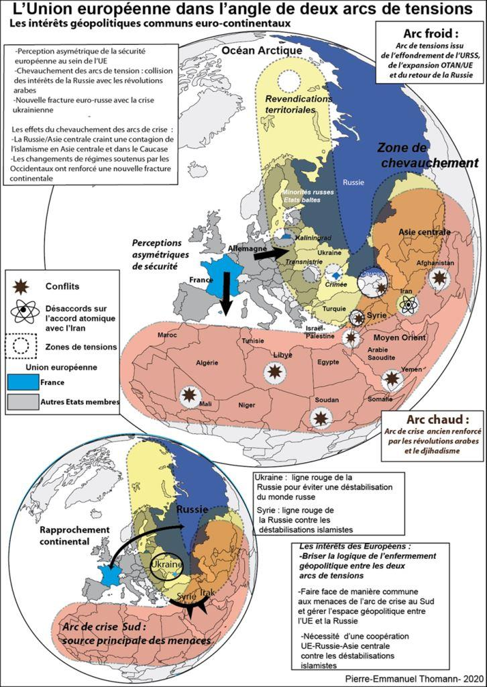De nombreux intérêts géopolitiques sont pourtant aujourd’hui identiques entre la Russie et les États membres de l’Union européenne. Il s’agit notamment de la stabilisation de l’arc de crise au sud de l’Eurasie qui va du Nord de l’Afrique, Sahel compris à l’Afghanistan, et qui menace toute l’Eurasie, Russie et pays européens de l’Ouest compris, avec les États faillis et la menace terroriste Djihadiste.
L'UE et la Russie devraient ainsi surmonter la crise ukrainienne afin de se concentrer sur le terrorisme islamiste en tant que menace prioritaire.
La mise en œuvre réussie des accords Minsk II nécessite davantage de pression sur le gouvernement ukrainien, car ils bloquent le processus de fédéralisation. L'Ukraine devrait adopter le statut de neutralité et agir comme un pont de coopération au lieu d'agir comme une ligne de front entre « l'Ouest » et la Russie (ni OTAN ni UE).
L’idée est de relancer une « Grande Europe » comme espace de coopération pour positionner les Européens entre un « Grand Occident » centré sur les États-Unis et leur nouvelle doctrine « America First », le projet de « Grande Asie/nouvelles routes de la soie » de la Chine, et le projet de « Grande Eurasie » de la Russie dont le cœur est l’Union économique eurasienne. Ces initiatives vont se chevaucher, souvent rivaliser, mais parfois aussi se compléter. Les Européens ne doivent pas rester inactifs par rapports aux grandes manœuvres des autres puissances. Les États membres d'un projet européen réformé et la Russie peuvent échapper à se transformer en partenaires juniors de ces projets géopolitiques rivaux, l’Union européenne restant un sous-élément périphérique du « Grand Occident » et la Russie un sous-élément de la « Grande Asie ».
Conclusion : les intérêts de la France
LA CRIMÉE PIVOT GÉOPOLITIQUE, HIER COMME AUJOURD'HUI
En fin de compte, la Crimée est à nouveau au centre des controverses sur l'ordre international, en 1853 comme en 2021. La configuration géopolitique a changé, mais pas la géographie, ni la rivalité des puissances aux échelles régionales, pan-européennes et mondiales. Les enjeux géopolitiques sur les temps longs présentent des similitudes et des permanences frappantes.
La Crimée est restée le pivot géopolitique en 1853, comme en 2021 qui permet à la Russie de se positionner comme grande puissance au niveau eurasien et mondial et les autres grandes puissances européennes, le Royaume-Uni, l'Allemagne et la France ont cherché à contenir le retour de la Russie dans les équilibres européens et mondiaux.
À la différence du XIXème siècle, ce qui a changé, c'est l'irruption des États-Unis comme puissance mondiale et européenne. Ils jouent le rôle de du Royaume-Uni de la France, dans leur opposition au retour de la Russie sur la scène mondiale et cherchent à ralentir l'émergence de la multipolarité, promue par la Russie mais aussi par la Chine.
La configuration géopolitique actuelle présente des similitudes avec les rivalités des puissances du XIXème siècle, même si les interdépendances économiques et énergétiques sont plus importantes er larme nucléaire change la nature des conflits entre grande puissances.
On constate aujourd'hui l'impasse de la vision euro-atlantiste exclusive pour les nations européennes19. En effet, selon cette doctrine, les Européens ne peuvent plus décider de leur destin et leurs priorités en fonction de leur propre géographie. La guerre froide est finie, mais l'inertie des représentations du monde bipolaire perdurent et sont mis en avant par les promoteurs du monde unipolaire et de l'atlantiste exclusif. Les enjeux et les menaces ont aussi pourtant changé. Au niveau de l'Eurasie, c'est l'arc de crise du Maroc à l'Afghanistan avec les États faillis, et l'islam radical qui représente la menace principale.
À l'issue de la guerre de Crimée de 1853-56, la France en s'opposant à la Russie avait cherché a retrouvé une place centrale dans la configuration géopolitique du milieu du XIXème siècle, place qu’elle avait perdue après le coup d'arrêt donné par la Sainte Alliance à l'expansionnisme de Napoléon.
Aujourd'hui, c'est au contraire une nouveau rapprochement franco-russe substantiel qui ouvrirait la voie à un équilibre européen et mondial plus favorable à la France vis à vis d'un projet européen, dont le centre de gravité géopolitique est occupé par l'Allemagne, puissance centrale de concert avec les États-Unis et l'OTAN20. La Russie cherche de son côté à obtenir des garanties de sécurité sur son flanc occidental après les invasions de Napoléon I, de Napoléon III, Adolf Hitler et enfin l'expansionnisme de l'OTAN après la disparition de l'URSS. C'est pour cette raison que l'idée d'une nouvelle architecture géopolitique européenne donne une responsabilité particulière à la France mais aussi la Russie, deux puissances d'équilibre pour promouvoir une approche alternative au blocage actuel et de convaincre d'autres États européens de la nécessité de la démarche. Encore faut-il lever les obstacles, et cela passe par l'acception du retour de la Crimée à la Russie, ou bien faire en sorte que cette nouvelle réalité géopolitique n'entrave pas le potentiel de coopération de Brest à Vladivostok.
P-E. T.
NOTES ET RÉFÉRENCES
1. À la suite de cette conférence internationale, une déclaration a été élaborée pour poser cette question centrale : « Avons nous appris des batailles sanglantes des XIXe et XXe siècles ? » Les sanctions réciproques, les rhétorique guerrières entre les États ont été jugées contreproductives pour surmonter les tensions actuelles.
Un agenda plus positif a été proposé avec les évènements et projet suivants
- L'organisation d'une table ronde d'experts et chercheurs des pays qui ont participé à la guerre de Crimée (1853-56) et à la Seconde Guerre mondiale au palais de Livadia, à Yalta , dont l''ordre du jour sera inspiré des œuvres de Léon Tolstoï ( qui a participé à la défense de Sébastopol en 1854-1855: « la Crimée du XXIe siècle: la guerre ou la paix ? »
-Le lancement d'un programme international « La Crimée en tant que station thermale internationale » pour la réadaptation des patients post-COVID-19 dans les sanatoriums, maisons de repos et pensions de Crimée.
- La reprise d'une coopération à grande échelle dans le domaine de l'écologie dans le bassin de la mer Noire avec le concours d'experts environnementaux de différents pays
-L'organisation d'un festival international de musique en faveur de la paix avec la participation des plus grands interprètes mondiaux de musique rock et classique intitulé « La charge de la brigade ART" sur le champ de bataille de Balaklava en 1854, immortalisé par le poème de Lord A. Tennyson « La charge de la Brigade légère ».
3. Marie-Pierre Rey, la Russie face à l'Europe, Flammarion, 506 p.
4. Alain Gouttman, La Guerre de Crimée, 1853-1856, Editions SPM, 1995, 534 p.
5. En 1871, la Russie a tiré profit de la défaite française lors la guerre franco-prussienne de 1870 pour réviser les clauses sur la démilitarisation de la mer Noire.
6. André LIEBICH, les promesses faites à Gorbatchev : l’avenir des alliances au crépuscule de la guerre froide, Institut de hautes études internationales et du développement, Relations internationales, n°147, Genève. 2011, p.85-96.
8. Aron Raymond, Paix et guerre entre les nations, Calman-Levy, p. 187.
9. Karaganov Serguey (2016) From East to West or Greater Eurasia, Russia in global affairs, 25 October//https://eng.globalaffairs.ru/pubcol/From-East-to-West-or-Greater-Eurasia-18440.
Karaganov, Sergey (2017) From the turn to the East to “Greater Eurasia” // Russia in global politics // https://globalaffairs.ru/pubcol/Ot-povorota-na-Vostok-k-Bolshoi-Evrazii-18739
10. Si la Géorgie et l’Ukraine avaient été admises au programme de préparation à l’entrée dans l’Alliance atlantique lors du sommet de Bucarest d’avril 2008 et conformément aux vœux des États-Unis et de certains États européens, le conflit entre la Géorgie et la Russie mais aussi la guerre civile en Ukraine aurait démontré l’incapacité de l’Alliance atlantique à réagir en face de la Russie sans risquer un conflit beaucoup plus grave. Le principe d’assistance mutuelle qui est au cœur de la crédibilité de l’Alliance atlantique se serait encore affaibli.
11. Sans effusion de sang, la stratégie russe évoque en effet le manuel de stratégie de Sun Tzu : « il vaut mieux gagner par reddition de l’ennemi, sans avoir à combattre » et révèle la maîtrise opérationnelle du gouvernement russe dans cette affaire. La Crimée a évité les combats meurtriers qui se sont ensuite déroulés dans l’Est de l’Ukraine.
12. Les russophones d’Ukraine ont déjà manifesté dans le passé contre l’arrivée des navires de l’OTAN à Sébastopol en Crimée.
13. Selon un haut fonctionnaire du SEAC de l'Union européenne, Washington et Berlin sont les deux capitales qui décident réellement des sanctions contre la Russie, tandis que les autre États sont suivistes. Entretien avec un diplomate du SEAC, Chef de division, planification stratégique, 24 novembre 2016
15. SEAC (Service européen d'Action extérieure), (2016), Vision partagée, action commune: Une Europe plus forte, Une stratégie globale pour la politique étrangère et de sécurité de l'Union européenne, p.26
16. European parliament (2019) Resolution on the state of EU-Russia political relations, 12 March 2019
17. Markus Ederer memorandum, https://www.ft.com/content/725aa5b6-d5f7-11e9-8367-807ebd53ab77
18. Thomann Pierre-Emmanuel, Peut-on penser les finalités européennes sans la Russie ? Hérodote 2017/1 (N° 164), p. 11 -122
19. Thomann Pierre-Emmanuel, La constitution d'une Union euro-atlantiste et équilibré est-elle possible ? p.39-70 dans l'ouvrage Quel projet demain pour l'Union européenne d'aujourd'hui ? Pierre Pascallon, l'Harmattan 2019, 281 p.
20. Thomann Pierre-Emmanuel, la couple franco-allemand: représentations géopolitiques, unité et rivalités, l'Harmattan, 2014 665 p.
Partager cette page